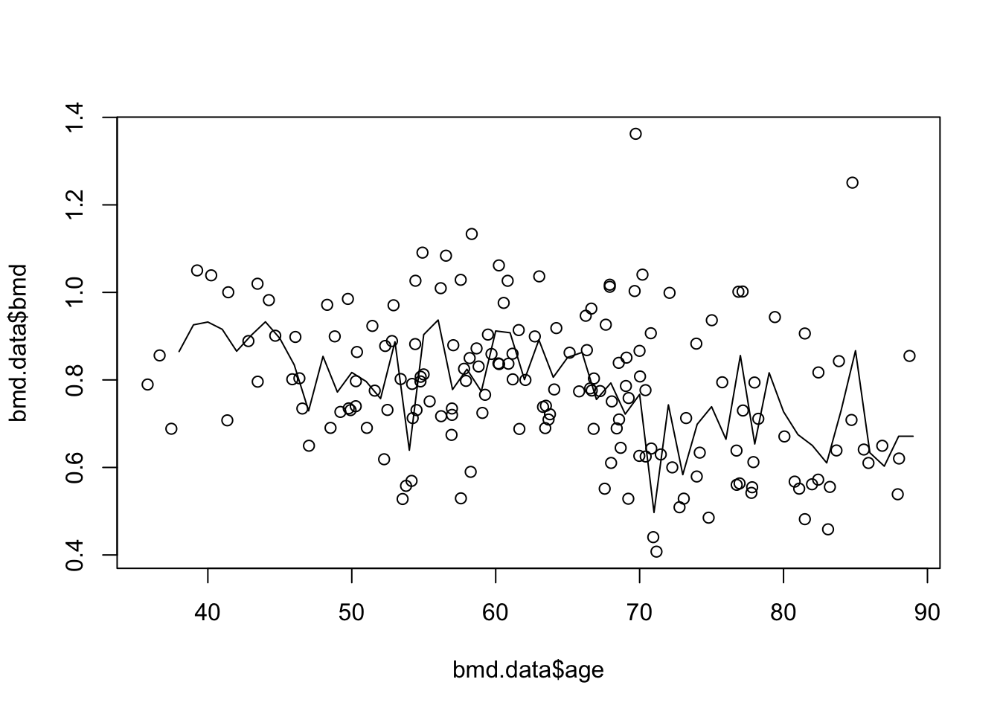
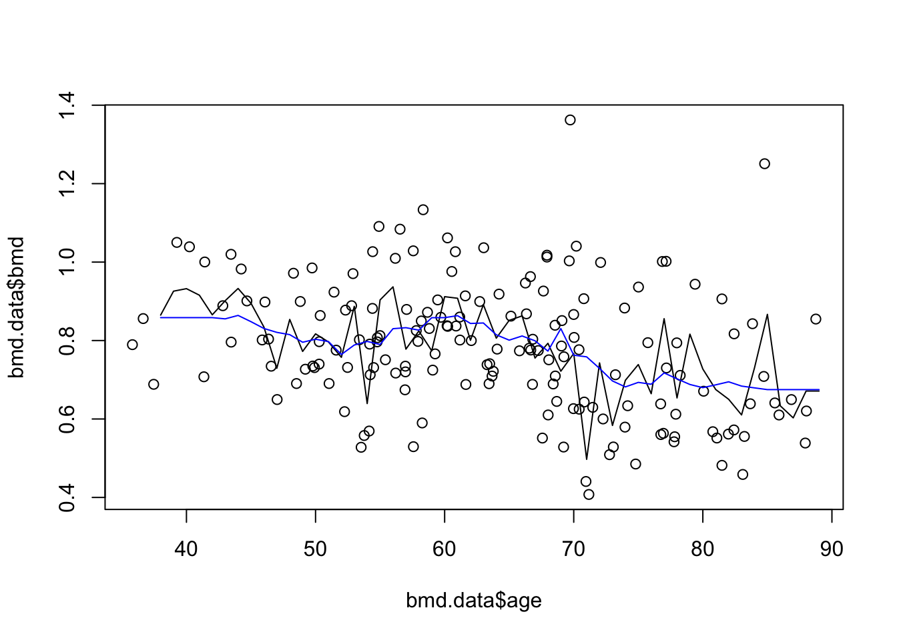

2 K-nearest Neighbours Regression
2.1 Introduction
KNN regression is a non-parametric method that, in an intuitive manner, approximates the association between independent variables and the continuous outcome by averaging the observations in the same neighbourhood. The size of the neighbourhood needs to be set by the analyst or can be chosen using cross-validation (we will see this later) to select the size that minimises the mean-squared error.
While the method is quite appealing, it quickly becomes impractical when the dimension increases, i.e., when there are many independent variables.
2.3 Practical session
Task - Fit a knn regression
With the bmd.csv dataset, we want to fit a knn regression with k=3 for BMD, with age as covariates. Then we will compute the MSE and \(R^2\).
## Warning: package 'FNN' was built under R version 4.3.3set.seed(1974) #fix the random generator seed
#read the data
bmd.data <-
read.csv("https://www.dropbox.com/s/c6mhgatkotuze8o/bmd.csv?dl=1",
stringsAsFactors = TRUE)#Fit a knn regression with k=3
#using the knn.reg() function from the FNN package
knn3.bmd <- knn.reg(train=bmd.data[c("age")],
y=bmd.data$bmd,
test= data.frame(age=seq(38,89)),
k=3) Before computing the MSE and \(R^2\), we will plot the model predictions
plot(bmd.data$age, bmd.data$bmd) #adding the scatter for BMI and BMD
lines(seq(38,89), knn3.bmd$pred) #adds the knn k=3 line
Finally, we compute the MSE and \(R^2\) for knn k=3. We have to refit the models and “test” them in the original data
knn3.bmd.datapred <- knn.reg(train=bmd.data[c("age")],
y=bmd.data$bmd,
test=bmd.data[c("age")], #ORIGINAL DATA
k=3) #knn reg with k=3
#MSE for knn k=3
mse.knn3 <- mean((knn3.bmd.datapred$pred - bmd.data$bmd)^2)
mse.knn3## [1] 0.01531282## [1] 0.4445392TRY IT YOURSELF:
- Fit a knn regression for BMD using AGE, with k=20
See the solution code
- Add the prediction line to the previous scatter plot
See the solution code

- Compute the MSE and \(R^2\)
See the solution code
#predictions from knn reg with k=20
knn20.bmd.datapred <- knn.reg(
train = bmd.data[c("age")],
y = bmd.data$bmd,
test = bmd.data[c("age")],
#ORIGINAL DATA
k = 20
)
#MSE for knn k=20
mse.knn20 <- mean((knn20.bmd.datapred$pred - bmd.data$bmd) ^ 2)
mse.knn20
#r2 for knn k=20
r2.knn20 <- 1-mse.knn20/(var(bmd.data$bmd)*168/169) #168/169 is added to correct
r2.knn20 #the degrees of freedom
- Add a linear prediction for BMD using AGE to the scatter plot
See the solution code
#The initial plot with knn3 and knn20
plot(bmd.data$age, bmd.data$bmd) #adding the scatter for BMI and BMD
lines(seq(38,89), knn3.bmd$pred)
lines(seq(38,89), knn20.bmd$pred, col="blue") #adds the knn k=20 gray line
#linear model and predictions
model.age <- lm(bmd ~ age,
data = bmd.data)
bmd.pred <- predict(model.age,
newdata = data.frame(age=seq(38,89)))
lines(seq(38,89), bmd.pred) #add the linear predictions to the plot2.4 Exercises
With the fat dataset in the library(faraway), we want to predict body fat (variable brozek) using the variable abdom
use a k-nearest neighbour regression, with k=3,5 and 11, to approximate the relation between brozek and abdom. Plot the three lines.
What is the predicted brozek for someone with abdom=90 using knn=11?
What is the predicted brozek for someone with abdom=90 using a linear model?
Compute the mean squared error for k=3,5 and 11
With the same data fat, use a knn (k=9) to predict body fat (variable brozek) using the variables abdom and age
Plot the predictions for abdom = 80 to 115 and age = 30
Would you expect the mean squared error for k=1 to be greater or smaller than the one for k=9? Why would you prefer k=9 over k=1?